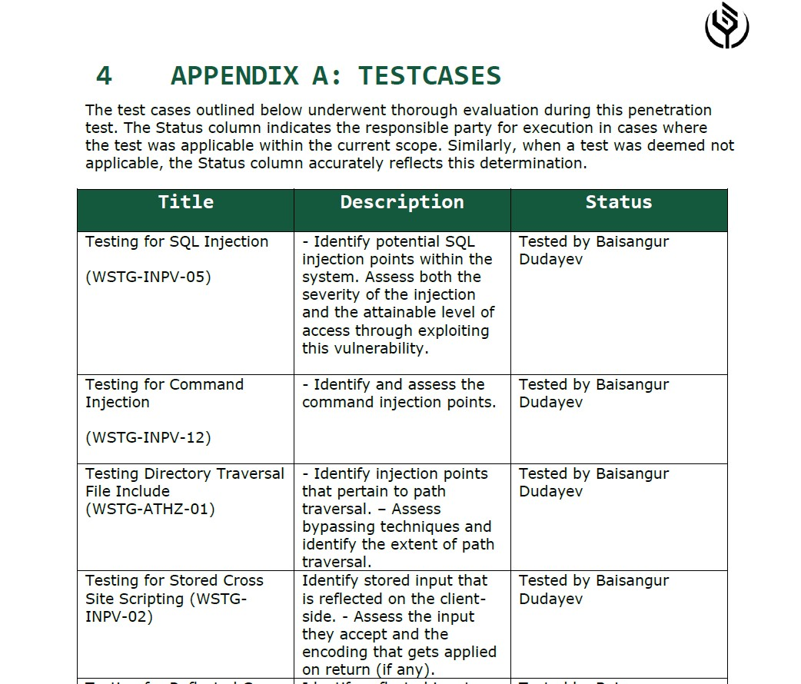
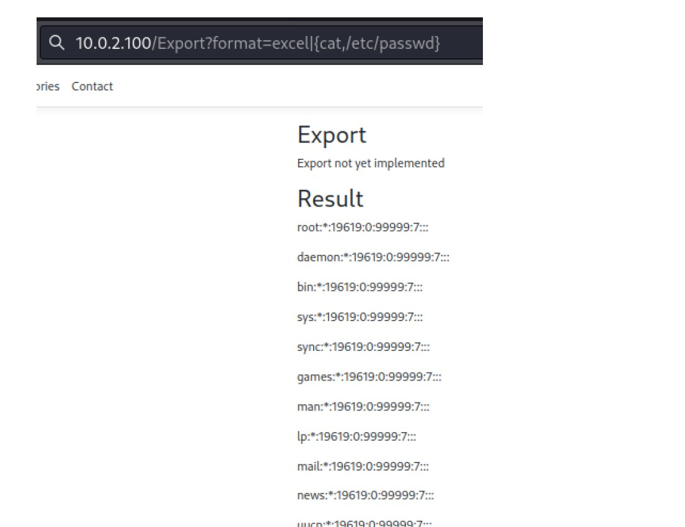
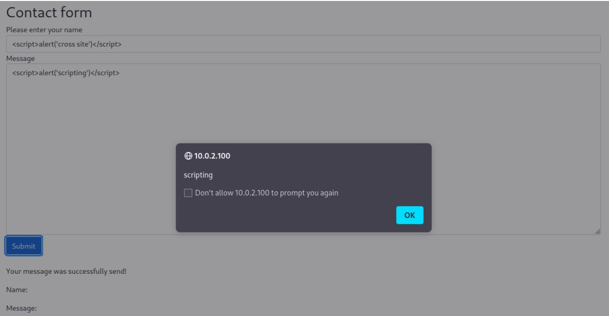

PENTEST REPORT
Application Security

View project PDF
Topics for testing
- SQL injection
- Command Injection
- Directory Traversal
- Information Disclosure
- Authentication
- Buffer Overflows & Gaining Remote Access
- Server-Side Request Forgery (SSRF)
- Cross-Site Scripting (XXS)
- Cross-Origin Resource Sharing (CORS)
- API testing
- File Upload Vulnerabilities
- Cross-Site Request Forgery (CSRF)
Summary
This project took place within the framework of the Application Security course at Thomas More Geel. The assignment was geared towards thoroughly assessing the security of a web application and compiling a detailed report of the discovered vulnerabilities. To begin, I established a controlled testing environment by configuring a web application on a virtual Ubuntu Server, accessed through my Kali virtual machine. Our instructors introduced a diverse range of undisclosed vulnerabilities, each tailored to challenge students individually.
Utilizing Burp Suite's robust proxy and repeater tools, I methodically examined the application's functionality and susceptibility to potential threats. Throughout the penetration testing process, I diligently explored various facets of the application to identify and analyze potential vulnerabilities.
It's worth noting that this pentest project encompassed a comprehensive evaluation of vulnerabilities across topics covered in the course curriculum. These topics served as the framework for our analysis, guiding our efforts towards a thorough assessment of the application's security posture.
Utilizing Burp Suite's robust proxy and repeater tools, I methodically examined the application's functionality and susceptibility to potential threats. Throughout the penetration testing process, I diligently explored various facets of the application to identify and analyze potential vulnerabilities.
It's worth noting that this pentest project encompassed a comprehensive evaluation of vulnerabilities across topics covered in the course curriculum. These topics served as the framework for our analysis, guiding our efforts towards a thorough assessment of the application's security posture.



What did i learn?
Throughout the project, I developed technical skills in web application security testing, particularly using tools like Burp Suite. I gained hands-on experience with virtual environments like Ubuntu Server and Kali Linux. Employing systematic testing methodologies, I honed my problem-solving skills and ability to analyze vulnerabilities critically. Moving forward, I recognize the importance of continuous learning to stay ahead in the dynamic field of cybersecurity.